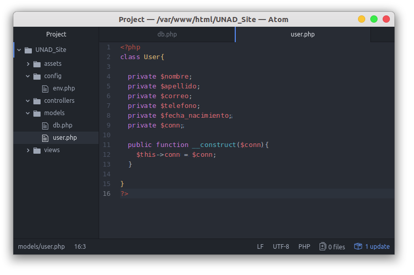

En esta parte ya entramos a la creación de nuestra clase de Usuario, la cual va a contener las funciones:
- Obtener Usuarios
- Crear Usuarios
- Modificar Usuarios
- Eliminar Usuarios
En este tema solo nos enfocaremos en la creación de la clase e inicialización de variables primordiales para el pŕoximo uso de la misma.
El crear la clase Usuario comienza igual que la clase Db, solo que ahora crearemos las variables privadas que tengamos como columnas en nuestra base de datos, para así poder darles un uso y que el obtener esa variable o escribir en esa variable sea sólo desde la clase. ¿Entonces qué haremos? Si en nuestra base de datos teníamos las columnas: nombre, apellido, correo, telefono, fecha_nacimiento entonces crearemos una variable privada por cada una de estas, y una variable $conn para recibir la conexión a la base de datos que creamos en la clase Db.

Ahora bien, estarán viendo que en constructor estamos recibiendo un $conn y luego se lo ponemos a nuestra variable private $conn, esto es para recibir la conexión de la Db desde el controlador de Usuario y así poder hacer consultas.
Ya con esto tendremos lista nuestra clase Usuario, lista para crear nuestras funciones. Sencillo, ¿No?